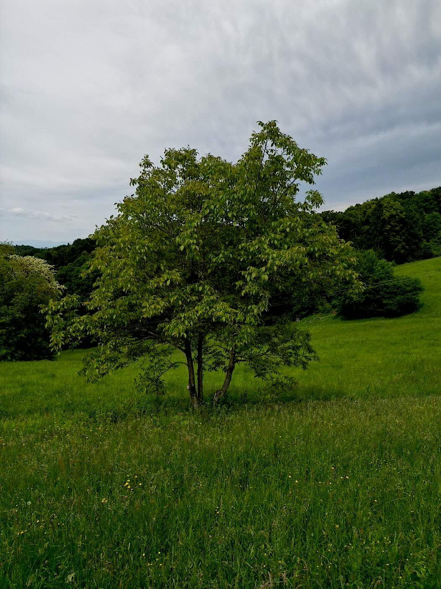
Mehr als ein Betrieb. Ein Lebensweg.
1940 kauften Cäcilia und Franz Ertler sen. den „Bergsteffl“.
Das ist der Anfang, auf den sich alles andere bezieht — und das Jahr, das bis heute in unserem Logo steht.
„Bergsteffl“ ist der Vulgoname des Hofs. In der Steiermark trägt ein Hof seinen Hausnamen oft länger, als eine Familie ihn bewohnt: Er bleibt am Ort, auch wenn sich die Namen am Türschild ändern. Cäcilia und Franz haben diesen Hof übernommen und daraus gemacht, was drei Generationen später noch trägt.
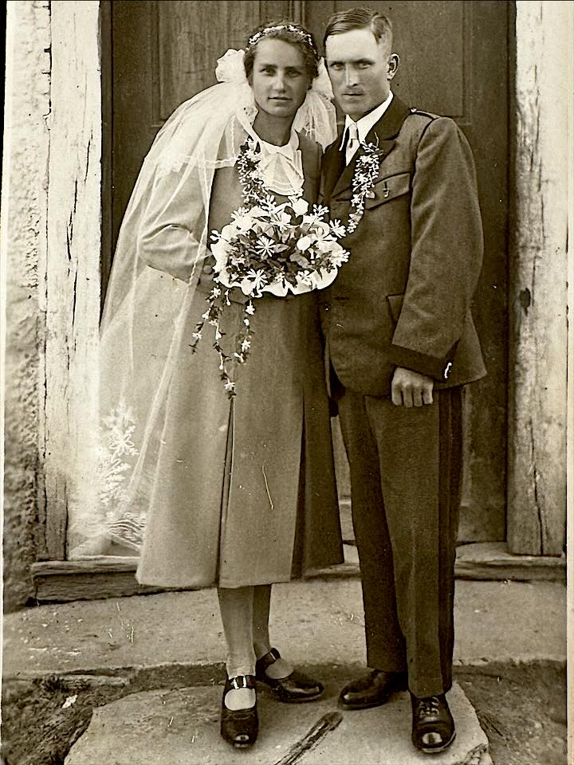
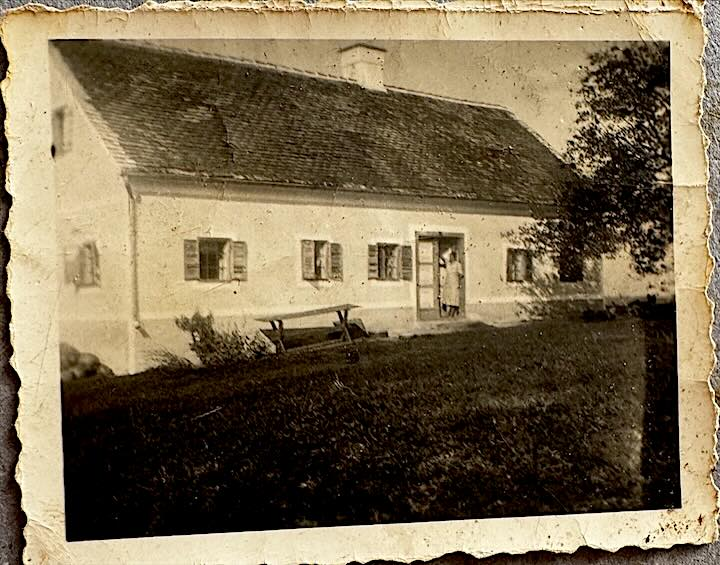
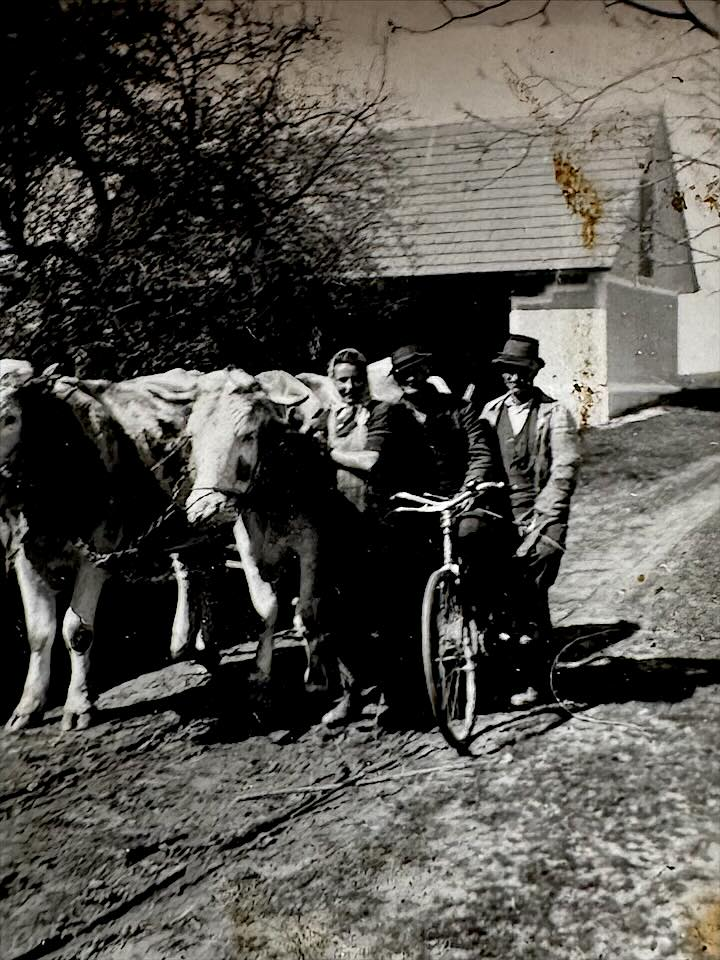
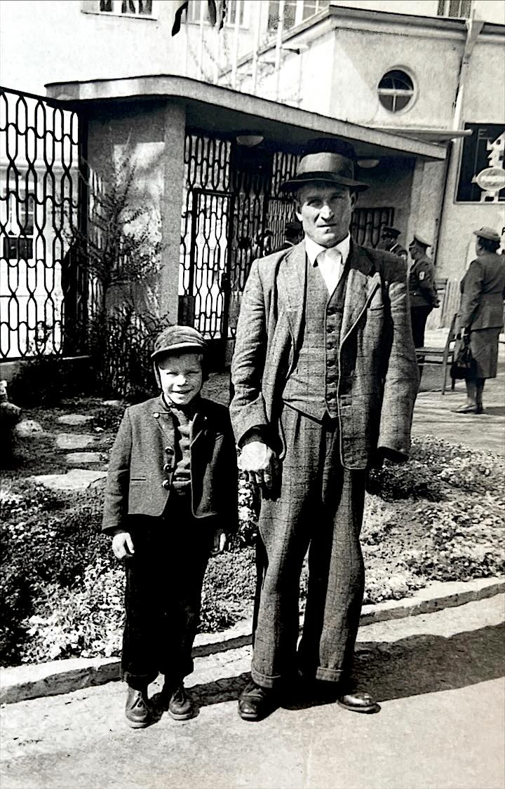
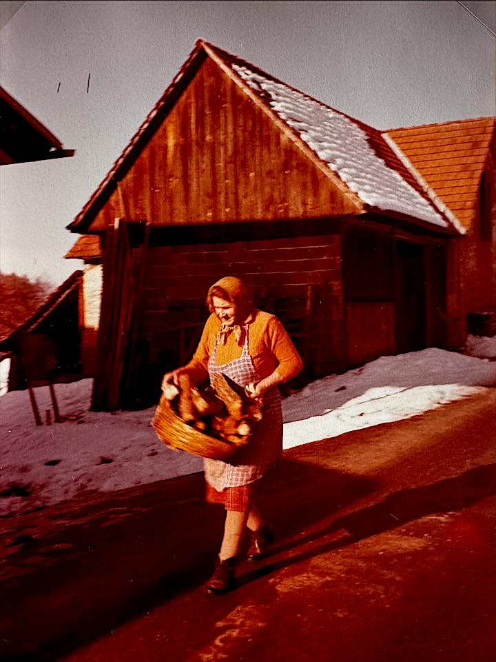
Drei Generationen später.
Aus dem Hof, den Cäcilia und Franz gekauft haben, ist ein Betrieb geworden, der sich mehrfach verändert hat — ohne seinen Kern zu verlieren.
Der Ertler Hof war immer ein Familienbetrieb. Meine Großeltern und meine Eltern haben ihn durch gute und schwierige Jahre getragen, ohne die Grundhaltung zu verlieren, mit der sie ihn übernommen hatten: Ein Hof hat eine Verantwortung — gegenüber dem Tier, dem Boden und der Familie.
Heute wird der Hof in dritter Generation geführt. Das Haupthaus steht auf der linken Seite, rechts die Ställe, der Geräteschuppen und der Heuboden. Diese Fläche ist der Mittelpunkt des Hofs — und dort ist auch der Wachtelstall untergebracht.

Lieber ein Produkt, das wirklich gut ist, als zehn, die nur durchschnittlich sind.
Fokus statt Breite
Wir konzentrieren uns auf ein Tier, das wir mit voller Aufmerksamkeit betreuen können: die Wachtel. Klein, aber aussagekräftig — und ein gutes Abbild dafür, was artgerechte Haltung bedeuten kann.
Direkt statt über Umwege
Haltung, Verpackung und Verkauf liegen in einer Hand. Unsere Eier gehen direkt an Kundinnen und Kunden und an Küchen in der Region — ohne Zwischenhandel, ohne lange Transporte.
Größe mit Maß
Rund 200 Wachteln sind keine industrielle Größenordnung. Wir wollen jedes Tier sehen und einschätzen können. Wächst der Hof, dann in einem Tempo, das wir verantworten.
Woran wir Entscheidungen messen.
Familie
Drei Generationen, ein Hof. Wissen wird weitergegeben, nicht neu erfunden.
Tierwohl
Platz, Licht, Sandbad und Rückzugsorte. Ein Tier soll Zeit haben, ein Tier zu sein.
Region
Kurze Wege und klare Herkunft. Was hier wächst, bleibt möglichst in der Steiermark.
Zeit
Qualität lässt sich nicht beschleunigen. Diese Überzeugung trägt den Hof seit 1940.
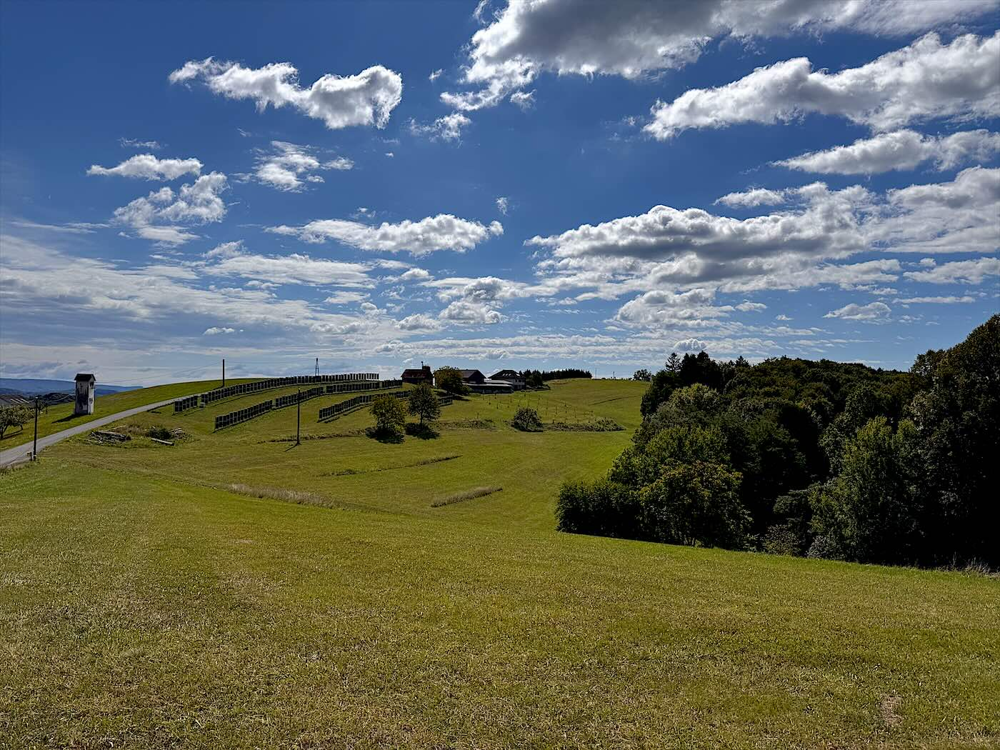
Eine Naturoase mit einem ungewöhnlichen Namen.
Hinter den Gebäuden erstrecken sich zu allen Seiten grüne Blumenwiesen und Äcker, gesäumt von Wald mit Brombeerhecken, Farnen und Gebüsch. Wenn man vor der Blumenwiese steht, fragt man sich, wie ein so schöner Ort die Adresse Höllgrund haben kann — er gleicht eher einer Naturoase.
Aus genau diesem Wald holen wir auch das, was die Wachteln am meisten freut: frische Zweige und Farne für neue Verstecke und weiche Nester im Stall.
Wer hier arbeitet.
Ein kleiner Hof lebt von wenigen Menschen, die vieles können — und von einem Hund, der der Meinung ist, dass ohne ihn gar nichts ginge.
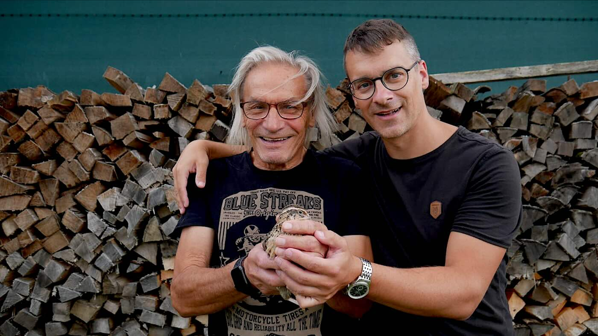
David Ertler
Führt den Hof in dritter Generation: Vermarktung, Kontakt zu den Küchen in der Region, Agri-PV — und die Entscheidungen, die über eine Saison hinausgehen. Daneben Co-Founder und Geschäftsführer von JACK.
Franz Ertler
Die Konstante am Hof — mit dem Wissen, das man nur über Jahrzehnte sammelt.
Gabriel
Verantwortlich für die Tiere und die Flächen — und er züchtet unsere Wachteln. Dass jeden Monat Nachwuchs schlüpft, ist seine Arbeit.
Manfred, genannt „Fredi“
Gelernter Maurer und damit so etwas wie unsere Leitung Facility Management: Wird am Hof gebaut, ausgebessert oder instand gehalten, hat Fredi die Hand drauf.
Asterix
Hofhund. Begrüßt jeden Besuch lautstark am Zaun und achtet darauf, dass am Hof alles rund läuft. Nicht nur die Wachteleier.
Gäste aus Singapur, China, Tansania und England.
Höllgrund 3 liegt nicht an der Durchzugsstraße. Trotzdem standen hier schon Menschen aus drei Kontinenten am Zaun — begrüßt wurden sie alle zuerst von Asterix.
Wer vorbeikommt, sieht den Stall, die Wiesen und die Wachteln. Keine Führung nach Programm, sondern einfach ein Rundgang über den Hof — und im besten Fall nimmt man ein paar Eier mit nach Hause.
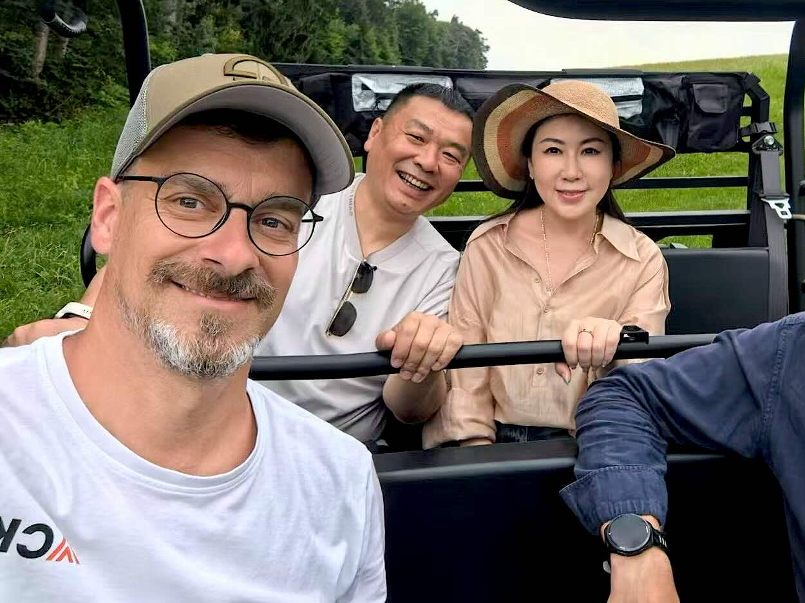
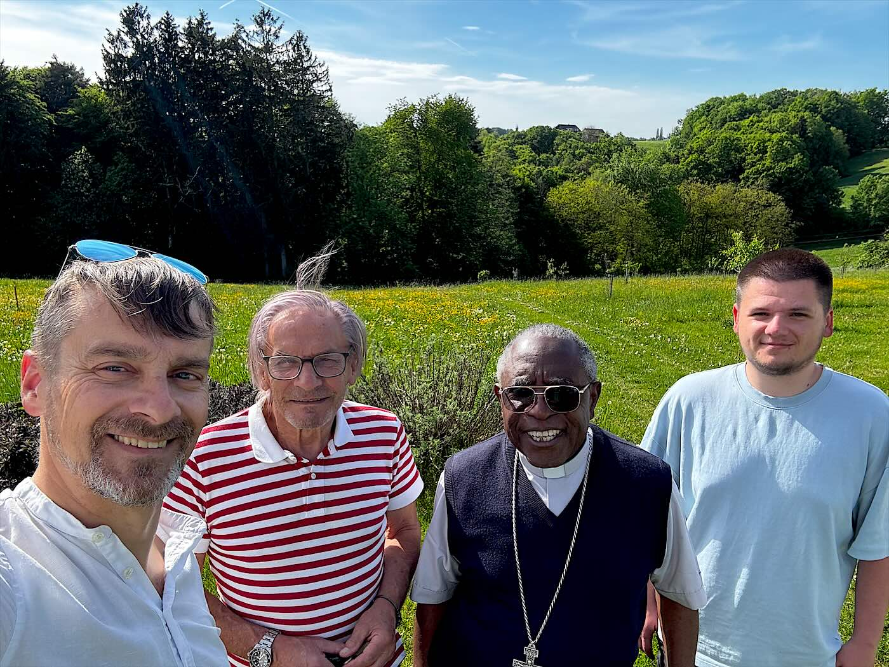
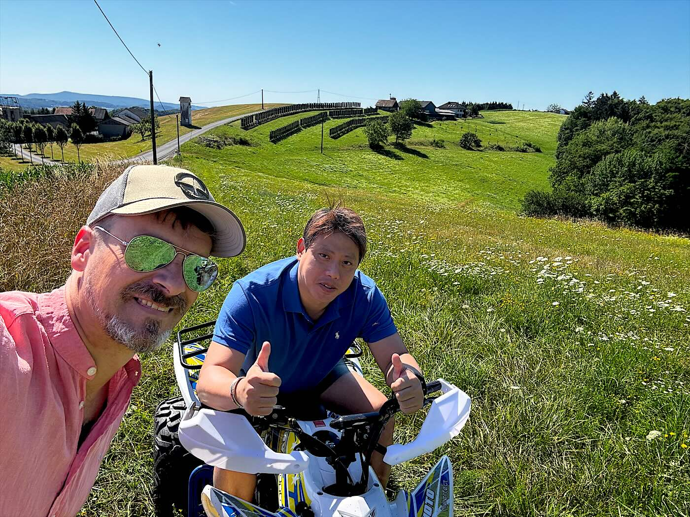
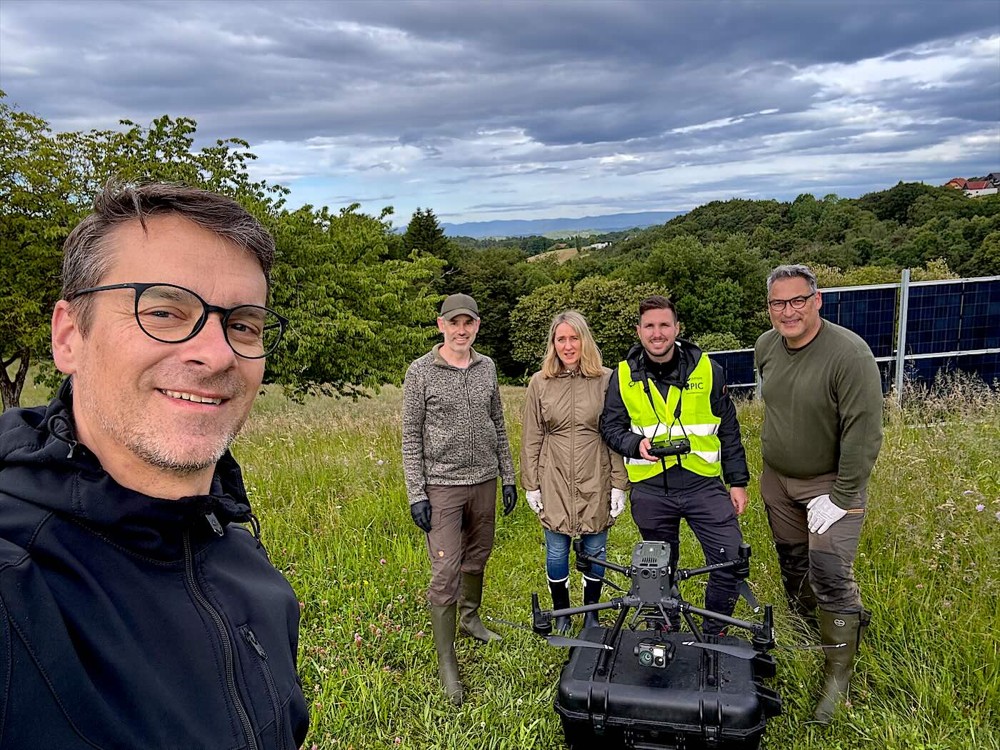
161 kWp über der Wiese.
Auf unseren Flächen steht eine Agri-Photovoltaik-Anlage mit 161 kWp Spitzenleistung. Die Module stehen in Reihen über dem Grünland — darunter wird weiter gemäht und bewirtschaftet.
Für uns ist das kein Widerspruch, sondern die naheliegende Nutzung eines Südhangs: Das Gras wächst weiter, das Tier frisst weiter, und dieselbe Fläche liefert zusätzlich Strom.
Über die Energiegemeinschaft eg-austria.at können wir diesen Strom in ganz Österreich weitergeben — nicht nur an die direkte Nachbarschaft. Wer Interesse an Strom vom Ertler Hof hat, meldet sich einfach bei uns.

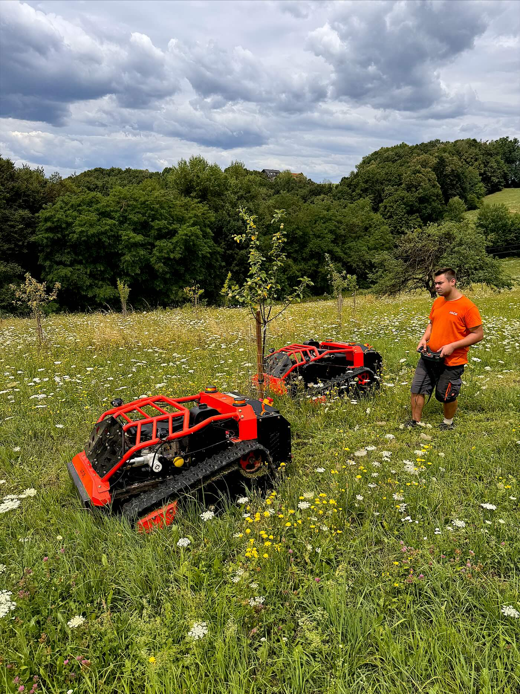
Aus einem zu steilen Hang wurde eine Maschine.
Die Flächen rund um den Hof sind steil. Franz hat sie jahrelang mit dem Motormäher gemäht — Hang für Hang, Sommer für Sommer.
Für David war nach der Übernahme klar, dass er das so nicht weitermachen will. Aus dieser Erkenntnis wurde JACK: eine ferngesteuerte Mähraupe für genau solche Steilflächen. Heute ist David Co-Founder und Geschäftsführer der Xplore Commerce GmbH, die JACK ein paar Minuten entfernt im Wirtschaftspark Süd in St. Stefan im Rosental baut.
Unsere Hänge sind ihr Heimrevier — hier wird gemäht und getestet. Und weil sich so eine Maschine am besten im Einsatz zeigt, finden am Ertler Hof regelmäßig Mähtage statt: auf genau den Flächen, für die JACK gebaut wurde.
Komm vorbei und schau es dir an.
Am besten kurz vorher anrufen — dann ist auch jemand da. Wir freuen uns auf jeden, der uns besuchen kommt oder unsere Produkte ausprobieren möchte.